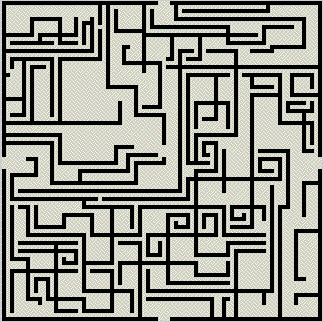
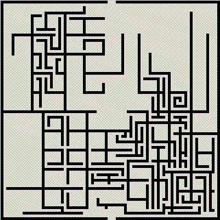

CRAWLER DEMOs
Design files allow the placement of openings in the corners and in the
centers of the outer walls, and on the first demo we have chosen to have
openings in the 4 wall centers. These can be entrances and exits to the
dungeon/labyrinth.
There are no design Crawlers in this demo, only RandCrawlers, which start off
the edge of the map at random points. The parameters for the RandCrawlers have
been selected so that the labyrinth does not become too hard, and many open
spaces remain.
Crawler demo # 1

The next labyrinth lacks RandCrawlers, and is based on two design Crawlers which
branch out from a guaranteed-open space in the center of the map. Such design
features can be made visible by running the program with the command-line
argument d (for design), as in dungeonmaker -d. Both Crawlers are
closed and will always connect with the outer labyrinth wall, thus
forcing the player who wants to get from the entrance at the top to the exit
at the bottom of the map to go through the guaranteed-open space in the center.
Obviously this could be used to place story elements.
The two design Crawlers have quite different parameters, which leads to different
labyrinth styles on the left and right side of the map. Other parameters have been
chosen so that in most cases Crawlers will die out before all the space on the
map has been filled. This makes it easier to see how Crawlers operate. Even if
we had let the Crawlers fill the entire space, there would always be a very
boring path following the outer labyrinth wall, which is the reason we
introduced the RandCrawlers.
While our demo program normally shows dungeons in real time while they are
being created, this
design is created first, then shown from a stored "movie". This approach is
preferable when dungeons must be tested for playability, and some
will be rejected. We only show this here to demonstrate that the data structures
for this are already in place.
Crawler demo # 2
